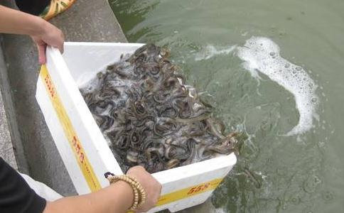

（1） 放生蚯蚓。每个城市都有渔具店，一块钱可以买一盒蚯蚓，一盒大概有几十只蚯蚓。放生蚯蚓属于两头放生，放生蚯蚓也是放生鱼，因为这些蚯蚓都是钓鱼者买了去引鱼上钩的，两头
注意买的时候不要预定，不要固定商店及时间。买完放生不要固定时间和地点，放时不要让人特别是钓鱼爱好者看见，放之前先为它们念
江慎修
在宋徽宗宣和年间，有个很有钱的商人，名字叫杨序。在二十八岁的时候，梦见一位神人告诉他说：“你再过十天，就要死了。但是你能够救活一万条生命，可以免死。”杨序说：“在这短短的十天内，要救活一万生命，恐不容易做满这数。”神人说：“
《
经书上说，鱼子不经盐渍过，经过三年，还可以再活命。施愚山先生说：「鱼已经死了，将鱼子轻轻的拿出，勿损坏，勿著盐，分摊在稻草把的上面，等它水迹少微干一些，浅浅的埋藏在水边的沙泥下，以免别的鱼来吞吃，自然都可以活命了，但是埋藏的地方，切不可离水的。倘若在冬冷春寒的时间，用干燥的泥块捣成粉，将鱼子拌裹了、晒暖了，好好收藏起来，积到阴历四月十五以后，撤放在河滩的水草中间，没有不都活的。其余月份，随时可以放的，也更便当了。」 鱼子投水，一救千命，天心唯仁。 经书上说，鱼子不经过盐水浸泡，三年以后还可以活下来。只要碰到煮鱼或
唐文宗御膳房内烹煮的鸡蛋在锅子里面集体地呼喊
致担心鱼子放不活的同修：鱼子是体外受精的，阳光的能量也能帮助它成熟及孵化，“三年以后还可以活下来”，经书字字
现代也有一些事实证明鱼子具有很强的生命力。比如一个刚挖的塘，就是下雨后接了雨水，没有其他河水、渠水灌入，过一段时间后发现里面居然会有鱼。对这种现象，科学家认为是以前土里保存下来的原来水体中的鱼子遇水生长成鱼造成的。
最近去一家菜场采购水产时，发现一位文质彬彬的年轻人不断向鱼贩子们要被贩子所杀的母鱼腹中遗留下来的鱼籽，并向鱼贩子采购怀孕的鲫鱼。
我上去问询，果然是我们的师兄弟。
他告诉我他钱不多，所以只能经常来这里买些怀孕的母鱼，然后放了。鱼贩子们知道哪些是怀孕的鱼，哪些不是。与鱼贩子搞好关系，他们会免费赠送给你许多鱼籽。一袋鱼籽有上万条生命。所以也劝我，多买些怀孕的母鱼。和鱼贩子搞好关系，多问贩子要些被贩子所杀的母鱼腹中遗留下来的鱼籽，然后放了，功德不可思议。
我问这些鱼籽能活吗？
师兄回答：“佛经上说，鱼的卵，没经过盐腌的，就是经过三年，还可以孵化生出鱼来”，更何况我放的鱼籽是新鲜的呢，肯定能成活的。希望师兄今后每天来收集鱼籽，附近没有河，可以先放在家里养着，每天水中放
啊！这位师兄太好了！我忠心的希望经常放生的师兄和住在菜场边的师兄能够经常放些怀孕的母鱼，并每天向贩子收购被贩子所杀的母鱼腹中遗留下来的鱼籽。这样不需要什么钱就能拯救上万条生命，积累无量功德。何乐而不为呢？
（3）参加集体共同放生 佛云：万人共造
放一只田螺等于放了很多小虫，救了很多小虫的生命，同时也给它们
消灾免难：称念“南无阿弥陀佛”第一功德
在此忏悔我所犯的一切恶念恶口恶行，忏悔我所犯一切邪淫重罪；愿分享此文的一切功德，皆悉回向给文章原作者、学佛网、转载者、各位读者；此文若有错谬，我皆忏悔，若有功德，普皆回向，愿断恶修善、广积阴德，发菩提心、行